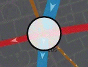

Find out when your local station is busiest and whether your commute indeed is busier than
it used to be. the animation to watch London's daily pulse,
and explore the data for and .

Some interesting stats to spot
Peak time at is after 10pm - the tube is a popular way to get back to homes and hotels after a night at the theatre.
Closing museums cause an early peak in , while shoppers on can also be seen in the stats.
School kids cause spikes in usage across certain quieter stations, particularly in .
morning peak entry is an hour before everyone else! Other stations have two morning peaks.
Some places are changing character. now has almost as many people arriving as leaving in the morning peak.
Tip: Click on lines to see the patterns of movement in each direction along each segment.
Line colours are the official colours for that line, as specified by TfL.
Only the higher of the flows in each direction are mapped, with arrows showing which way this is.
Station borders change colour - red indicate that more people are entering the station than interchanging in it or leaving it, black indicates more interchanges and green indicates more exits.
When comparing years, orange lines/stations indicate a fall in usage between the years. Blue stations indicate a rise in usage. The station areas and line thicknesses correspond to the size of the rise (or fall).
One moment please - loading the datasets needed...